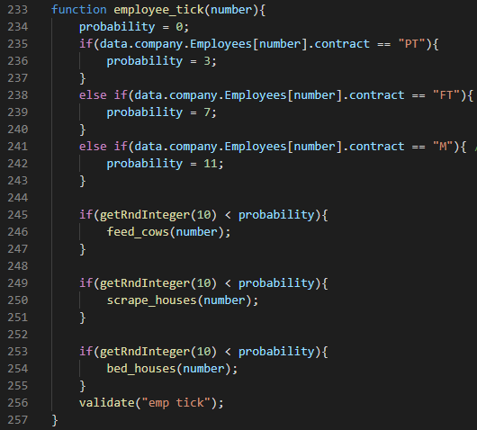

Program Structure
When programming the simulation everything will occur within a 'tick'.
In this example each tick will represent the passing of a day. Therefore
all of the events that may occur within a day should have the possibility
of occuring within every tick. All of these actions are included within
a loop in the main program, the loop continues to tick in order to
simulate the passing of time. The loop can be iterated more or less times
in order to pass more or less time.
As shown in the image, rather than the code for every event
being put into a loop functions declared outside the loop should
be called within the loop. This prevents the code from becoming
unreadable but also aids the functionality of the code as some
events may occur twice within a day and then the function may just
be called again rather than the entire chunk of code be re-written.

Each event should be triggered by an employee or cow etc. For example, the function employee_tick shown
in the image will be called from a loop which loops through an array of employees. Depending which employee
is passed into the function there is a different probability of the job being completed.
A json file is used to contain all of the information about the farm and the objects on the farm (cows and employees)
This json file can be accessed from within the program and used to simulate a farm with the exact details of the farm
being provided in the json. This allows for multiple farms to be simulated quickly and easily by simply referencing a
different json file for each farm. Increasing the flexibility of the simulator. The image below shows an example extract
from a json, showing a cow instance within the cow object of the json.